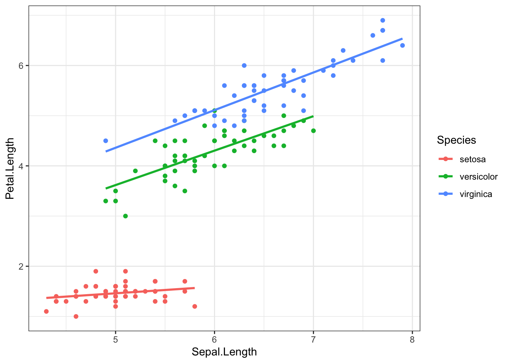
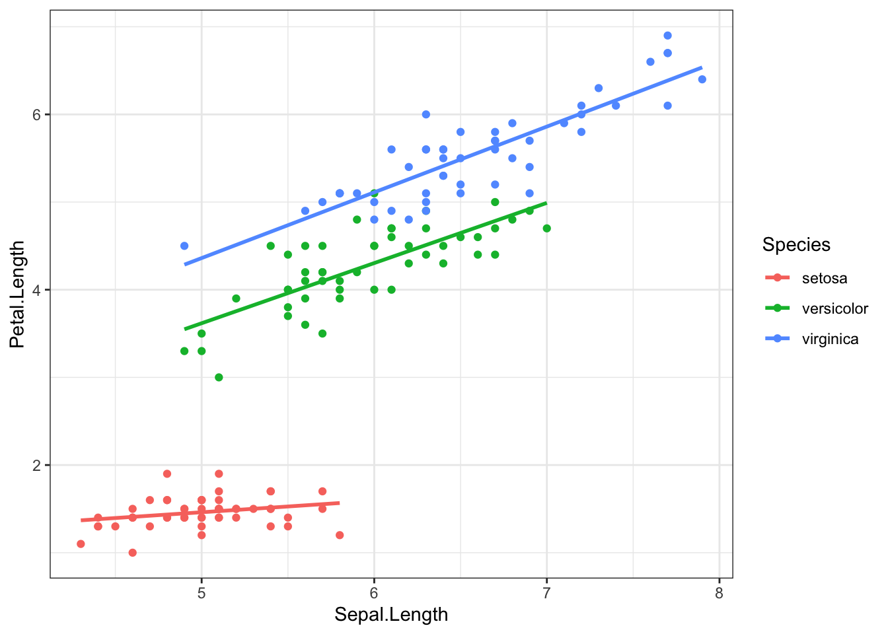
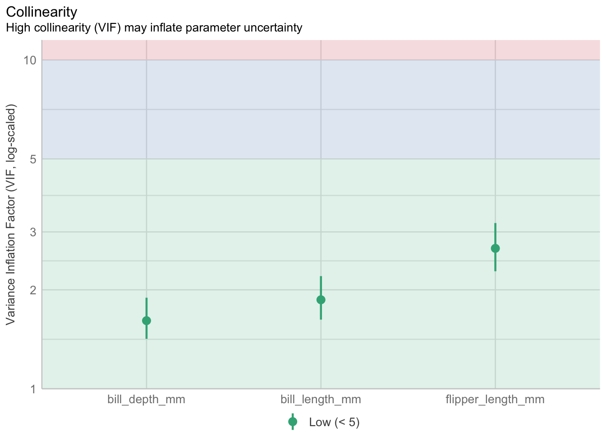
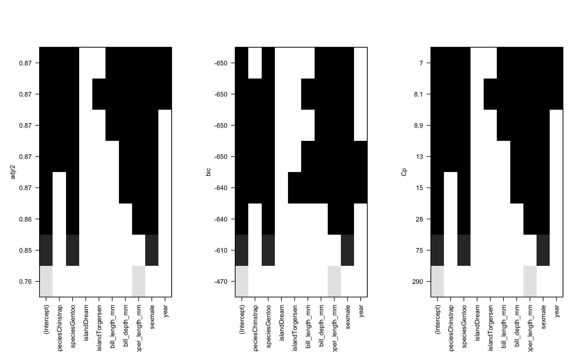
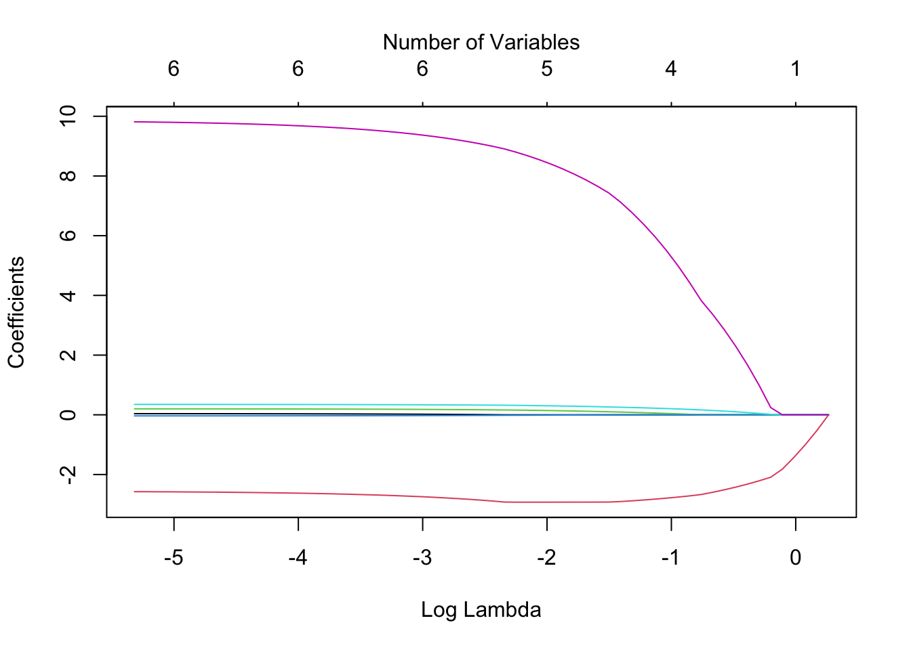
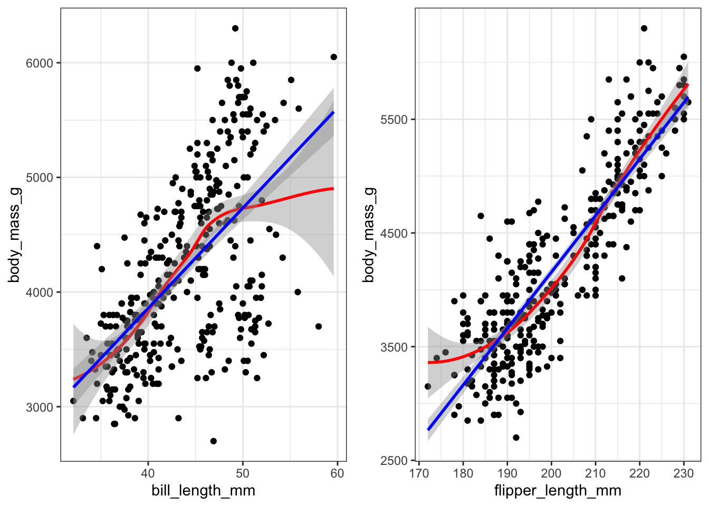
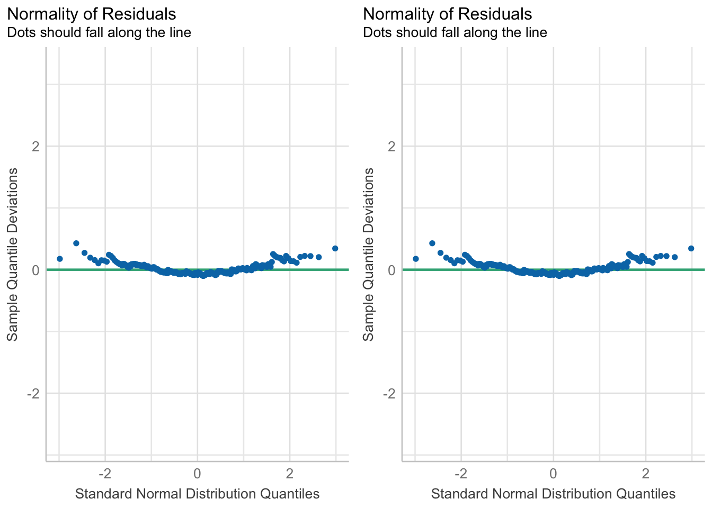
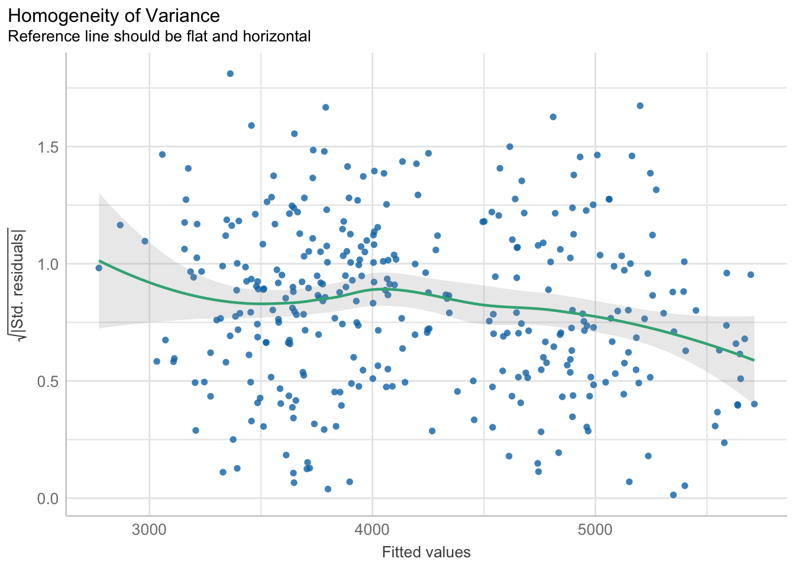
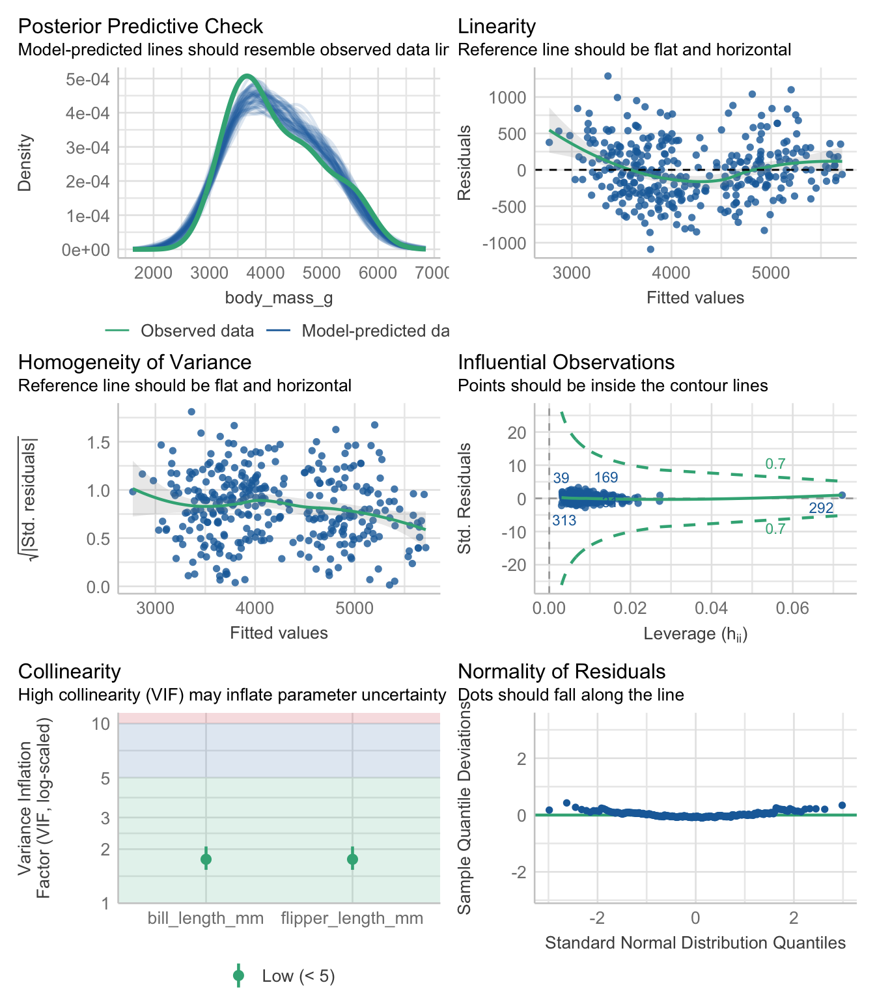

ggplot(iris, aes(x=Sepal.Length, y=Petal.Length, color = Species)) +
geom_point() + geom_smooth(method="lm", se=FALSE)
Model building methods are used mainly in exploratory situations where many independent variables have been measured, but a final model explaining the dependent variable has not been reached. You want to build a model that contains enough covariates to explain the model well, but still be parsimonious such that the model is still interpretable.
This chapter introduces how to use and interpret different types of covariates, how to choose covariates, and then cover some methods to compare between competing models using measures of model fit.
This section uses functions from the
gtsummaryandsurveypackages to help tidy and visualize results from regression models. It also uses functions from theperformanceandglmnetpackages to perform model selection and assessment.
In this main effects model, Species only changes the intercept. The effect of species is not multiplied by Sepal length. Reviewing the scatterplot below, do you think this is a reasonable model to fit the observed relationship?
ggplot(iris, aes(x=Sepal.Length, y=Petal.Length, color = Species)) +
geom_point() + geom_smooth(method="lm", se=FALSE)
If we care about how species changes the relationship between petal and sepal length, we can fit a model with an interaction between sepal length (\(x_{1}\)) and species. For this first example let \(x_{2}\) be an indicator for when species == setosa. Note that both main effects of sepal length, and setosa species are also included in the model. Interactions are mathematically represented as a multiplication between the two variables that are interacting.
\[ Y_{i} \sim \beta_{0} + \beta_{1}x_{i} + \beta_{2}x_{2i} + \beta_{3}x_{1i}x_{2i}\]
If we evaluate this model for both levels of \(x_{2}\), the resulting models are the same as the stratified models.
When \(x_{2} = 0\), the record is on an iris not from the setosa species.
\[ Y_{i} \sim \beta_{0} + \beta_{1}x_{i} + \beta_{2}(0) + \beta_{3}x_{1i}(0)\] which simplifies to \[ Y_{i} \sim \beta_{0} + \beta_{1}x_{i}\]
When \(x_{2} = 1\), the record is on an iris of the setosa species.
\[ Y_{i} \sim \beta_{0} + \beta_{1}x_{i} + \beta_{2}(1) + \beta_{3}x_{1i}(1)\] which simplifies to \[ Y_{i} \sim (\beta_{0} + \beta_{2}) + (\beta_{1} + \beta_{3})x_{i}\]
Each subgroup model has a different intercept and slope, but we had to estimate 4 parameters in the interaction model, and 6 for the fully stratified model.
Interactions are fit in R by simply multiplying * the two variables together in the model statement.
iris$setosa <- ifelse(iris$Species == "setosa", 1, 0)
lm(Petal.Length ~ Sepal.Length + setosa + Sepal.Length*setosa, data=iris) |> tbl_regression()| Characteristic | Beta | 95% CI1 | p-value |
|---|---|---|---|
| Sepal.Length | 1.0 | 0.91, 1.1 | <0.001 |
| setosa | 2.4 | 0.61, 4.1 | 0.008 |
| Sepal.Length * setosa | -0.90 | -1.2, -0.56 | <0.001 |
| 1 CI = Confidence Interval | |||
The coefficient \(b_{3}\) for the interaction term is significant, confirming that species changes the relationship between sepal length and petal length. Thus, species is a moderator (see Chapter 8).
Interpreting Coefficients
setosa=0)1.03-0.9=0.13 cm for every additional cm of sepal length.Let’s up the game now and look at the full interaction model with a categorical version of species. Recall \(x_{1}\) is Sepal Length, \(x_{2}\) is the indicator for versicolor, and \(x_{3}\) the indicator for virginica . Refer to Section 9.4.3 for information on how to interpret categorical predictors as main effects.
\[ Y_{i} \sim \beta_{0} + \beta_{1}x_{i} + \beta_{2}x_{2i} + \beta_{3}x_{3i} + \beta_{4}x_{1i}x_{2i} + \beta_{5}x_{1i}x_{3i}+\epsilon_{i}\]
summary(lm(Petal.Length ~ Sepal.Length + Species + Sepal.Length*Species, data=iris))
Call:
lm(formula = Petal.Length ~ Sepal.Length + Species + Sepal.Length *
Species, data = iris)
Residuals:
Min 1Q Median 3Q Max
-0.68611 -0.13442 -0.00856 0.15966 0.79607
Coefficients:
Estimate Std. Error t value Pr(>|t|)
(Intercept) 0.8031 0.5310 1.512 0.133
Sepal.Length 0.1316 0.1058 1.244 0.216
Speciesversicolor -0.6179 0.6837 -0.904 0.368
Speciesvirginica -0.1926 0.6578 -0.293 0.770
Sepal.Length:Speciesversicolor 0.5548 0.1281 4.330 2.78e-05 ***
Sepal.Length:Speciesvirginica 0.6184 0.1210 5.111 1.00e-06 ***
---
Signif. codes: 0 '***' 0.001 '**' 0.01 '*' 0.05 '.' 0.1 ' ' 1
Residual standard error: 0.2611 on 144 degrees of freedom
Multiple R-squared: 0.9789, Adjusted R-squared: 0.9781
F-statistic: 1333 on 5 and 144 DF, p-value: < 2.2e-16The slope of the relationship between sepal length and petal length is calculated as follows, for each species:
Compare this to the estimates gained from the stratified model:
by(iris, iris$Species, function(x){
lm(Petal.Length ~ Sepal.Length, data=x) %>% coef()
})iris$Species: setosa
(Intercept) Sepal.Length
0.8030518 0.1316317
------------------------------------------------------------
iris$Species: versicolor
(Intercept) Sepal.Length
0.1851155 0.6864698
------------------------------------------------------------
iris$Species: virginica
(Intercept) Sepal.Length
0.6104680 0.7500808 They’re the same! Proof that an interaction is equivalent to stratification.
What if we now wanted to include other predictors in the model? How does sepal length relate to petal length after controlling for petal width? We add the variable for petal width into the model
summary(lm(Petal.Length ~ Sepal.Length + setosa + Sepal.Length*setosa + Petal.Width, data=iris))
Call:
lm(formula = Petal.Length ~ Sepal.Length + setosa + Sepal.Length *
setosa + Petal.Width, data = iris)
Residuals:
Min 1Q Median 3Q Max
-0.83519 -0.18278 -0.01812 0.17004 1.06968
Coefficients:
Estimate Std. Error t value Pr(>|t|)
(Intercept) -0.86850 0.27028 -3.213 0.00162 **
Sepal.Length 0.66181 0.05179 12.779 < 2e-16 ***
setosa 1.83713 0.62355 2.946 0.00375 **
Petal.Width 0.97269 0.07970 12.204 < 2e-16 ***
Sepal.Length:setosa -0.61106 0.12213 -5.003 1.61e-06 ***
---
Signif. codes: 0 '***' 0.001 '**' 0.01 '*' 0.05 '.' 0.1 ' ' 1
Residual standard error: 0.2769 on 145 degrees of freedom
Multiple R-squared: 0.9761, Adjusted R-squared: 0.9754
F-statistic: 1478 on 4 and 145 DF, p-value: < 2.2e-16So far, petal width, and the combination of species and sepal length are both significantly associated with petal length.
Note of caution: Stratification implies that the stratifying variable interacts with all other variables. So if we were to go back to the stratified model where we fit the model of petal length on sepal length AND petal width, stratified by species, we would be implying that species interacts with both sepal length and petal width.
E.g. the following stratified model
is the same as the following interaction model:
Let’s explore the relationship between income, employment status and depression. This example follows a logistic regression example from section @ref(mlogreg).
Here I create the binary indicators of lowincome (annual income <$10k/year) and underemployed (part time or unemployed).
depress_clean$lowincome <- ifelse(depress_clean$income < 10, 1, 0)
table(depress_clean$lowincome, depress_clean$income, useNA="always")
2 4 5 6 7 8 9 11 12 13 15 16 18 19 20 23 24 25 26 27 28 31 32 35
0 0 0 0 0 0 0 0 17 2 18 24 1 1 25 3 25 2 1 1 1 19 1 1 24
1 7 8 10 12 18 14 22 0 0 0 0 0 0 0 0 0 0 0 0 0 0 0 0 0
<NA> 0 0 0 0 0 0 0 0 0 0 0 0 0 0 0 0 0 0 0 0 0 0 0 0
36 37 42 45 55 65 <NA>
0 1 1 1 15 9 10 0
1 0 0 0 0 0 0 0
<NA> 0 0 0 0 0 0 0depress_clean$underemployed <- ifelse(depress_clean$employ %in% c("PT", "Unemp"), 1, 0 )
table(depress_clean$underemployed, depress_clean$employ, useNA="always")
1 2 3 4 5 6 7 <NA>
0 167 42 14 38 27 2 4 0
<NA> 0 0 0 0 0 0 0 0The Main Effects model assumes that the effect of income on depression is independent of employment status, and the effect of employment status on depression is independent of income.
me_model <- glm(cases ~ lowincome + underemployed, data=depress_clean, family="binomial")
summary(me_model)
Call:
glm(formula = cases ~ lowincome + underemployed, family = "binomial",
data = depress_clean)
Coefficients: (1 not defined because of singularities)
Estimate Std. Error z value Pr(>|z|)
(Intercept) -1.6393 0.1902 -8.618 <2e-16 ***
lowincome 0.1684 0.3294 0.511 0.609
underemployed NA NA NA NA
---
Signif. codes: 0 '***' 0.001 '**' 0.01 '*' 0.05 '.' 0.1 ' ' 1
(Dispersion parameter for binomial family taken to be 1)
Null deviance: 268.12 on 293 degrees of freedom
Residual deviance: 267.87 on 292 degrees of freedom
AIC: 271.87
Number of Fisher Scoring iterations: 4To formally test whether an interaction term is necessary, we add the interaction term into the model and assess whether the coefficient for the interaction term is significantly different from zero.
me_intx_model <- glm(cases ~ lowincome + underemployed + lowincome*underemployed, data=depress_clean, family="binomial")
summary(me_intx_model)
Call:
glm(formula = cases ~ lowincome + underemployed + lowincome *
underemployed, family = "binomial", data = depress_clean)
Coefficients: (2 not defined because of singularities)
Estimate Std. Error z value Pr(>|z|)
(Intercept) -1.6393 0.1902 -8.618 <2e-16 ***
lowincome 0.1684 0.3294 0.511 0.609
underemployed NA NA NA NA
lowincome:underemployed NA NA NA NA
---
Signif. codes: 0 '***' 0.001 '**' 0.01 '*' 0.05 '.' 0.1 ' ' 1
(Dispersion parameter for binomial family taken to be 1)
Null deviance: 268.12 on 293 degrees of freedom
Residual deviance: 267.87 on 292 degrees of freedom
AIC: 271.87
Number of Fisher Scoring iterations: 4The General-F test is used for simultaneous tests of \(Q\) variables in a model. This is used primarily in two situations:
Consider a model with \(P\) variables and you want to test if \(Q\) additional variables are useful.
We can leverage the ANOVA framework to compare the residual sum of squares between the model including the \(Q\) variables, and the one without.
\[ F = \frac{({\mbox{RSS}}_P-{\mbox{RSS}_{P+Q})}/Q}{{\mbox {RSS}}_{P+Q}{/}(N-P-Q-1)} \]
The numerator quantifies improvement in the model from adding the additional \(Q\) variables. This ratio has a \(F\) distribution with \(Q\) and \(N-P-Q-1\) degrees of freedom.
Example Consider the following model, where \(X_{1}\) and \(X_{2}\) are continuous predictors and \(X_{3}, X_{4}, X_{5}\) are binary indicators from a 4 level categorical variable.
\[ Y = \beta_{0} + \beta_{1}X_{1} + \beta_{2}X_{2} + \beta_{3}X_{3} + \beta_{4}x_{4} + \beta_{5}X_{5}+\epsilon_{i} \]
If you wanted to test (1) whether or not the categorical variable as a whole improves model fit, then \(\mathbf{R} = \begin{bmatrix} 0 , 0 ,1,1,1 \end{bmatrix}\)
If we want to test (2) that the regression plane is useful to predict \(Y\), then we are testing \(\beta_{1}=\beta_{2}=...\beta_{5}=0\), then \(\mathbf{R} = \begin{bmatrix} 1 , 1 ,1,1,1 \end{bmatrix}\).
Consider a model to predict depression using age, employment status and whether or not the person was chronically ill in the past year as covariates. This example uses the cleaned depression data set.
employ.depression.model <- lm(cesd ~ age + chronill + employ, data=depress_clean)
summary(employ.depression.model)
Call:
lm(formula = cesd ~ age + chronill + employ, data = depress_clean)
Residuals:
Min 1Q Median 3Q Max
-15.907 -5.601 -2.065 3.142 32.753
Coefficients:
Estimate Std. Error t value Pr(>|t|)
(Intercept) 11.14724 1.33736 8.335 3.14e-15 ***
age -0.14439 0.03043 -4.745 3.28e-06 ***
chronill 2.27884 1.01165 2.253 0.025 *
employ 1.42030 0.34798 4.082 5.79e-05 ***
---
Signif. codes: 0 '***' 0.001 '**' 0.01 '*' 0.05 '.' 0.1 ' ' 1
Residual standard error: 8.429 on 290 degrees of freedom
Multiple R-squared: 0.09677, Adjusted R-squared: 0.08742
F-statistic: 10.36 on 3 and 290 DF, p-value: 1.703e-06The results of this model show that age and chronic illness are statistically associated with CESD (each p<.006). However employment status shows mixed results. Some employment statuses are significantly different from the reference group, some are not. So overall, is employment status associated with depression?
(1) Testing if a categorical variable as a whole improves model fit
Since employment is a categorical variable, all the coefficient estimates shown are the effect of being in that income category has on depression compared to being employed full time. For example, the coefficient for PT employment is greater than zero, so they have a higher CESD score compared to someone who is fully employed.
To test that employment status affects CESD we need to do a global test that all \(\beta\)’s related to employment status are 0.
\(H_{0}: \beta_{3} = \beta_{4} = \beta_{5} = \beta_{6} = \beta_{7} = \beta_{8} = 0\)
\(H_{A}\): At least one \(\beta_{j}\) is not 0.
ANOVA to the rescue! Since ANOVA partitions the variance in our outcome \(Y\) into amounts due to each variable, we get an ANOVA table that has one row per term:
aov(employ.depression.model) %>% summary() Df Sum Sq Mean Sq F value Pr(>F)
age 1 615 614.6 8.651 0.00353 **
chronill 1 409 409.2 5.759 0.01703 *
employ 1 1184 1183.6 16.659 5.79e-05 ***
Residuals 290 20605 71.1
---
Signif. codes: 0 '***' 0.001 '**' 0.01 '*' 0.05 '.' 0.1 ' ' 1employ is what we are interested in here.The p-value of this Wald test is significant, thus not \(beta\)’s are equal to zero, which implies employment status significantly predicts CESD score.
age and chronill are not the same as in the regression model. ANOVA models are order dependent as they describe a “reduction” in variance in the outcome due to that variable. A deeper explanation of this is not included in these notes at this time.
(2) Testing that the regression plane is useful to predict \(Y\)
This information is provided to us directly in the last line of the summary output from a linear model.
summary(employ.depression.model)
Call:
lm(formula = cesd ~ age + chronill + employ, data = depress_clean)
Residuals:
Min 1Q Median 3Q Max
-15.907 -5.601 -2.065 3.142 32.753
Coefficients:
Estimate Std. Error t value Pr(>|t|)
(Intercept) 11.14724 1.33736 8.335 3.14e-15 ***
age -0.14439 0.03043 -4.745 3.28e-06 ***
chronill 2.27884 1.01165 2.253 0.025 *
employ 1.42030 0.34798 4.082 5.79e-05 ***
---
Signif. codes: 0 '***' 0.001 '**' 0.01 '*' 0.05 '.' 0.1 ' ' 1
Residual standard error: 8.429 on 290 degrees of freedom
Multiple R-squared: 0.09677, Adjusted R-squared: 0.08742
F-statistic: 10.36 on 3 and 290 DF, p-value: 1.703e-06Moderation is introduced in Chapter @ref(mod-strat), and helps to set the motivation for stratified models. Later, in Chapter @ref(interactions-catvars), we show that an interaction term in a regression model is equivelant to stratification.
Well what if you have other predictors in the model, not just the ones that you have an interaction on? We can use the Wald test to assess if a measure is a significant moderator without stratifying.
Continuing with the depression example we saw that employment affects CESD depression score. What if we think that the effect (slope) of age on CESD may be different depending on their employment? That is, is the effect of age on depression different for those that are employed versus retired?
emp.dep.intx <- lm(cesd ~ age + chronill + employ + age*employ, data=depress_clean)
summary(emp.dep.intx)
Call:
lm(formula = cesd ~ age + chronill + employ + age * employ, data = depress_clean)
Residuals:
Min 1Q Median 3Q Max
-17.207 -5.506 -2.057 3.125 33.450
Coefficients:
Estimate Std. Error t value Pr(>|t|)
(Intercept) 8.21730 2.50270 3.283 0.00115 **
age -0.07501 0.05861 -1.280 0.20170
chronill 2.29855 1.01016 2.275 0.02361 *
employ 2.67061 0.96780 2.759 0.00616 **
age:employ -0.02664 0.01924 -1.384 0.16737
---
Signif. codes: 0 '***' 0.001 '**' 0.01 '*' 0.05 '.' 0.1 ' ' 1
Residual standard error: 8.416 on 289 degrees of freedom
Multiple R-squared: 0.1027, Adjusted R-squared: 0.0903
F-statistic: 8.271 on 4 and 289 DF, p-value: 2.501e-06Let’s revisit our list of beta coefficients:
To see if the interaction term age*employ is significant, we run an F test via aov() and interpret the p-value for the interaction term age:employ. Here the pvalue is very large, so there is no reason to believe that employment moderates the relationship between age and CESD score. This is a two way relationship. There is also no reason to believe that age moderates the relationship between employment and CESD score.
aov(emp.dep.intx) |> summary() Df Sum Sq Mean Sq F value Pr(>F)
age 1 615 614.6 8.678 0.00348 **
chronill 1 409 409.2 5.778 0.01686 *
employ 1 1184 1183.6 16.712 5.64e-05 ***
age:employ 1 136 135.7 1.916 0.16737
Residuals 289 20469 70.8
---
Signif. codes: 0 '***' 0.001 '**' 0.01 '*' 0.05 '.' 0.1 ' ' 1This last table is also known as a “Two Factor” or “Two way” ANOVA with an interaction term. This is quite often used in scientific experiments where two treatments (and their combination) is being investigated.
For example, the squared standard error of the \(i\)th slope coefficient (\([SE(\beta_{i})]^2\)) can be written as:
\[ [SE(\beta_{i})]^2 = \frac{S^{2}}{(N-1)(S_{i}^{2})}*\frac{1}{1 - (R_{i})^2} \]
where \(S^{2}\) is the residual mean square, \(S_{i}\) the standard deviation of \(X_{i}\), and \(R_{i}\) the multiple correlation between \(X_{i}\) and all other \(X\)’s.
When \(R_{i}\) is close to 1 (very large), \(1 - (R_{i})^2\) becomes close to 0, which makes \(\frac{1}{1 - (R_{i})^2}\) very large.
This fraction is called the variance inflation factor and is available in most model diagnostics.
big.pen.model <- lm(body_mass_g ~ bill_length_mm + bill_depth_mm + flipper_length_mm, data=pen)
performance::check_collinearity(big.pen.model) |> plot()
Variable selection methods such as the ones described in this section, are most often used when performing an Exploratory analysis, where many independent variables have been measured, but a final model to explain the variability of a dependent variable has not yet been determined.
When building a model, we want to choose a set of independent variables that both will yield a good prediction using as few variables as possible (parsimony). We also need to consider controlling for moderators and confounders. In many situations where regression is used, the investigator has strong justification for including certain variables in the model.
The investigator may have prior justification for using certain variables but may be open to suggestions for the remaining variables.
The set of independent variables can be broken down into logical subsets
How variables are chosen for inclusion into a model is heavily driven by the purpose of the model:
This example uses the penguins data to model the body mass
pen.nomiss <- pen %>% na.omit()Most programs have the option to force variables to be included in the model. This is important in cases where there is a primary factor of interest such as a treatment effect.
Doing stepwise selection in R
First you need to specify your null model - just the outcome, no covariates, and the full model - the outcome against ALL of your covariates.
null.model <- lm(body_mass_g ~ 1, data=pen.nomiss)
full.model <- lm(body_mass_g ~ ., data=pen.nomiss)Forward selection
step(null.model,
scope=list(lower=null.model, upper=full.model),
direction='forward', trace=1) |> summary()Start: AIC=4457.28
body_mass_g ~ 1
Df Sum of Sq RSS AIC
+ flipper_length_mm 1 164047703 51211963 3981.1
+ species 2 145190219 70069447 4087.5
+ island 2 83740680 131518986 4297.2
+ bill_length_mm 1 74792533 140467133 4317.1
+ bill_depth_mm 1 47959592 167300074 4375.3
+ sex 1 38878897 176380769 4392.9
<none> 215259666 4457.3
+ year 1 102884 215156782 4459.1
Step: AIC=3981.13
body_mass_g ~ flipper_length_mm
Df Sum of Sq RSS AIC
+ sex 1 9416589 41795374 3915.5
+ species 2 5368818 45843144 3948.3
+ island 2 3437527 47774435 3962.0
+ year 1 2666295 48545668 3965.3
+ bill_depth_mm 1 338887 50873075 3980.9
<none> 51211963 3981.1
+ bill_length_mm 1 140000 51071963 3982.2
Step: AIC=3915.47
body_mass_g ~ flipper_length_mm + sex
Df Sum of Sq RSS AIC
+ species 2 13141806 28653568 3793.8
+ island 2 6037165 35758209 3867.5
+ bill_depth_mm 1 3667377 38127997 3886.9
+ year 1 2276715 39518658 3898.8
<none> 41795374 3915.5
+ bill_length_mm 1 144990 41650383 3916.3
Step: AIC=3793.76
body_mass_g ~ flipper_length_mm + sex + species
Df Sum of Sq RSS AIC
+ bill_depth_mm 1 1196096 27457472 3781.6
+ bill_length_mm 1 780776 27872792 3786.6
+ year 1 474080 28179488 3790.2
<none> 28653568 3793.8
+ island 2 61695 28591873 3797.0
Step: AIC=3781.56
body_mass_g ~ flipper_length_mm + sex + species + bill_depth_mm
Df Sum of Sq RSS AIC
+ bill_length_mm 1 541825 26915647 3776.9
+ year 1 272828 27184644 3780.2
<none> 27457472 3781.6
+ island 2 59488 27397984 3784.8
Step: AIC=3776.93
body_mass_g ~ flipper_length_mm + sex + species + bill_depth_mm +
bill_length_mm
Df Sum of Sq RSS AIC
+ year 1 319160 26596486 3775.0
<none> 26915647 3776.9
+ island 2 56214 26859432 3780.2
Step: AIC=3774.95
body_mass_g ~ flipper_length_mm + sex + species + bill_depth_mm +
bill_length_mm + year
Df Sum of Sq RSS AIC
<none> 26596486 3775
+ island 2 79468 26517018 3778
Call:
lm(formula = body_mass_g ~ flipper_length_mm + sex + species +
bill_depth_mm + bill_length_mm + year, data = pen.nomiss)
Residuals:
Min 1Q Median 3Q Max
-809.15 -179.43 -3.42 183.60 866.03
Coefficients:
Estimate Std. Error t value Pr(>|t|)
(Intercept) 80838.770 41677.817 1.940 0.053292 .
flipper_length_mm 18.064 3.088 5.849 1.20e-08 ***
sexmale 382.168 47.797 7.996 2.28e-14 ***
speciesChinstrap -274.496 81.558 -3.366 0.000855 ***
speciesGentoo 929.275 136.036 6.831 4.16e-11 ***
bill_depth_mm 60.749 19.926 3.049 0.002487 **
bill_length_mm 18.997 7.086 2.681 0.007718 **
year -41.139 20.832 -1.975 0.049131 *
---
Signif. codes: 0 '***' 0.001 '**' 0.01 '*' 0.05 '.' 0.1 ' ' 1
Residual standard error: 286.1 on 325 degrees of freedom
Multiple R-squared: 0.8764, Adjusted R-squared: 0.8738
F-statistic: 329.3 on 7 and 325 DF, p-value: < 2.2e-16Backward selection
step(full.model, direction='backward', trace=1) |> summary()Start: AIC=3777.96
body_mass_g ~ species + island + bill_length_mm + bill_depth_mm +
flipper_length_mm + sex + year
Df Sum of Sq RSS AIC
- island 2 79468 26596486 3775.0
<none> 26517018 3778.0
- year 1 342414 26859432 3780.2
- bill_length_mm 1 583730 27100748 3783.2
- bill_depth_mm 1 758473 27275491 3785.3
- flipper_length_mm 1 2872068 29389086 3810.2
- sex 1 5101785 31618803 3834.6
- species 2 6470784 32987802 3846.7
Step: AIC=3774.95
body_mass_g ~ species + bill_length_mm + bill_depth_mm + flipper_length_mm +
sex + year
Df Sum of Sq RSS AIC
<none> 26596486 3775.0
- year 1 319160 26915647 3776.9
- bill_length_mm 1 588158 27184644 3780.2
- bill_depth_mm 1 760657 27357143 3782.3
- flipper_length_mm 1 2800047 29396533 3806.3
- sex 1 5231718 31828204 3832.8
- species 2 9693667 36290153 3874.4
Call:
lm(formula = body_mass_g ~ species + bill_length_mm + bill_depth_mm +
flipper_length_mm + sex + year, data = pen.nomiss)
Residuals:
Min 1Q Median 3Q Max
-809.15 -179.43 -3.42 183.60 866.03
Coefficients:
Estimate Std. Error t value Pr(>|t|)
(Intercept) 80838.770 41677.817 1.940 0.053292 .
speciesChinstrap -274.496 81.558 -3.366 0.000855 ***
speciesGentoo 929.275 136.036 6.831 4.16e-11 ***
bill_length_mm 18.997 7.086 2.681 0.007718 **
bill_depth_mm 60.749 19.926 3.049 0.002487 **
flipper_length_mm 18.064 3.088 5.849 1.20e-08 ***
sexmale 382.168 47.797 7.996 2.28e-14 ***
year -41.139 20.832 -1.975 0.049131 *
---
Signif. codes: 0 '***' 0.001 '**' 0.01 '*' 0.05 '.' 0.1 ' ' 1
Residual standard error: 286.1 on 325 degrees of freedom
Multiple R-squared: 0.8764, Adjusted R-squared: 0.8738
F-statistic: 329.3 on 7 and 325 DF, p-value: < 2.2e-16Stepwise
step(null.model,
scope=list(lower=null.model, upper=full.model),
direction='both', trace=1) |> summary()Start: AIC=4457.28
body_mass_g ~ 1
Df Sum of Sq RSS AIC
+ flipper_length_mm 1 164047703 51211963 3981.1
+ species 2 145190219 70069447 4087.5
+ island 2 83740680 131518986 4297.2
+ bill_length_mm 1 74792533 140467133 4317.1
+ bill_depth_mm 1 47959592 167300074 4375.3
+ sex 1 38878897 176380769 4392.9
<none> 215259666 4457.3
+ year 1 102884 215156782 4459.1
Step: AIC=3981.13
body_mass_g ~ flipper_length_mm
Df Sum of Sq RSS AIC
+ sex 1 9416589 41795374 3915.5
+ species 2 5368818 45843144 3948.3
+ island 2 3437527 47774435 3962.0
+ year 1 2666295 48545668 3965.3
+ bill_depth_mm 1 338887 50873075 3980.9
<none> 51211963 3981.1
+ bill_length_mm 1 140000 51071963 3982.2
- flipper_length_mm 1 164047703 215259666 4457.3
Step: AIC=3915.47
body_mass_g ~ flipper_length_mm + sex
Df Sum of Sq RSS AIC
+ species 2 13141806 28653568 3793.8
+ island 2 6037165 35758209 3867.5
+ bill_depth_mm 1 3667377 38127997 3886.9
+ year 1 2276715 39518658 3898.8
<none> 41795374 3915.5
+ bill_length_mm 1 144990 41650383 3916.3
- sex 1 9416589 51211963 3981.1
- flipper_length_mm 1 134585395 176380769 4392.9
Step: AIC=3793.76
body_mass_g ~ flipper_length_mm + sex + species
Df Sum of Sq RSS AIC
+ bill_depth_mm 1 1196096 27457472 3781.6
+ bill_length_mm 1 780776 27872792 3786.6
+ year 1 474080 28179488 3790.2
<none> 28653568 3793.8
+ island 2 61695 28591873 3797.0
- flipper_length_mm 1 4325617 32979185 3838.6
- species 2 13141806 41795374 3915.5
- sex 1 17189576 45843144 3948.3
Step: AIC=3781.56
body_mass_g ~ flipper_length_mm + sex + species + bill_depth_mm
Df Sum of Sq RSS AIC
+ bill_length_mm 1 541825 26915647 3776.9
+ year 1 272828 27184644 3780.2
<none> 27457472 3781.6
+ island 2 59488 27397984 3784.8
- bill_depth_mm 1 1196096 28653568 3793.8
- flipper_length_mm 1 3145834 30603306 3815.7
- sex 1 7932472 35389944 3864.1
- species 2 10670525 38127997 3886.9
Step: AIC=3776.93
body_mass_g ~ flipper_length_mm + sex + species + bill_depth_mm +
bill_length_mm
Df Sum of Sq RSS AIC
+ year 1 319160 26596486 3775.0
<none> 26915647 3776.9
+ island 2 56214 26859432 3780.2
- bill_length_mm 1 541825 27457472 3781.6
- bill_depth_mm 1 957145 27872792 3786.6
- flipper_length_mm 1 2481143 29396790 3804.3
- sex 1 5482024 32397671 3836.7
- species 2 11183644 38099291 3888.6
Step: AIC=3774.95
body_mass_g ~ flipper_length_mm + sex + species + bill_depth_mm +
bill_length_mm + year
Df Sum of Sq RSS AIC
<none> 26596486 3775.0
- year 1 319160 26915647 3776.9
+ island 2 79468 26517018 3778.0
- bill_length_mm 1 588158 27184644 3780.2
- bill_depth_mm 1 760657 27357143 3782.3
- flipper_length_mm 1 2800047 29396533 3806.3
- sex 1 5231718 31828204 3832.8
- species 2 9693667 36290153 3874.4
Call:
lm(formula = body_mass_g ~ flipper_length_mm + sex + species +
bill_depth_mm + bill_length_mm + year, data = pen.nomiss)
Residuals:
Min 1Q Median 3Q Max
-809.15 -179.43 -3.42 183.60 866.03
Coefficients:
Estimate Std. Error t value Pr(>|t|)
(Intercept) 80838.770 41677.817 1.940 0.053292 .
flipper_length_mm 18.064 3.088 5.849 1.20e-08 ***
sexmale 382.168 47.797 7.996 2.28e-14 ***
speciesChinstrap -274.496 81.558 -3.366 0.000855 ***
speciesGentoo 929.275 136.036 6.831 4.16e-11 ***
bill_depth_mm 60.749 19.926 3.049 0.002487 **
bill_length_mm 18.997 7.086 2.681 0.007718 **
year -41.139 20.832 -1.975 0.049131 *
---
Signif. codes: 0 '***' 0.001 '**' 0.01 '*' 0.05 '.' 0.1 ' ' 1
Residual standard error: 286.1 on 325 degrees of freedom
Multiple R-squared: 0.8764, Adjusted R-squared: 0.8738
F-statistic: 329.3 on 7 and 325 DF, p-value: < 2.2e-16Warnings:
Other references Stats 191 at Stanford. This one uses cross-validation on the stepwise procedures, and demonstrates the dangers of trusting models that come out of blind use of variable selection methods. https://web.stanford.edu/class/stats191/notebooks/Selection.html
oc.ht <- regsubsets(body_mass_g ~ ., data=pen.nomiss)
par(mfrow=c(1,3)) # set plotting window to be 1 row and 3 columns
plot(oc.ht, scale='adjr2');plot(oc.ht, scale='bic');plot(oc.ht, scale='Cp')
In this example variables that show up as improving model fit include species, sex, flipper_length_mm, bill_length, and possibly year. For sure island is out.
Other references from STDHA: http://www.sthda.com/english/articles/37-model-selection-essentials-in-r/155-best-subsets-regression-essentials-in-r/
Notable problems: categorical variables are not treated as a group. that is, they are not “all in” or “all out”. If at least one level is frequently chosen as improving model fit, add the entire categorical variable to the model.
Least Absolute Shrinkage and Selection Operator.
The goal of LASSO is to minimize
\[ RSS + \lambda \sum_{j}\mid \beta_{j} \ \mid \]
where \(\lambda\) is a model complexity penalty parameter.
The lasso fits many regression models and selects those variables that show the strongest association with the response variable using the data at hand. This is also described as a method of selective inference (Taylor and Tibshirani, 2015) and is an example of exploratory research, where the data may influence what type and how many analyses are performed.
glmnet package, and the Chemical data set from PMA6. Also it uses the model.matrix function from the stats package (automatically loaded). This function takes a set of input predictors and turns them into the variables that are used directly in the model. For example, categorical variables will be converted into multiple binary indicators. This typically happens in the background.
The glmnet function works best when the outcome y and predictors x are not contained within a data frame. The alpha argument is the tuning parameter, where a value of 1 specifies the lasso.
library(glmnet)
chem <- read.table("data/Chemical.txt", header = TRUE)
y <- chem$PE
x <- model.matrix(PE~., chem)[,-1] # the -1 drops the intercept
chem.lasso <- glmnet(x, y, alpha = 1)We can visualize the effect of the coefficient shrinkage using the following plot.
plot(chem.lasso, xvar = "lambda")
mtext(side=3, "Number of Variables", line=2)
Examining the coefficients of the chem.lasso model object gives us a very large matrix (7x61), listing the coefficients for each value of \(\lambda\) that was tried. A sample of columns are shown below:
coef(chem.lasso)[,1:8]7 x 8 sparse Matrix of class "dgCMatrix"
s0 s1 s2 s3 s4 s5
(Intercept) 9.366667 9.5835968 9.7812554 9.961355 10.12545 10.0399324
ROR5 . . . . . .
DE . -0.5206322 -0.9950129 -1.427251 -1.82109 -2.0903355
SALESGR5 . . . . . .
EPS5 . . . . . .
NPM1 . . . . . 0.0157436
PAYOUTR1 . . . . . 0.2427377
s6 s7
(Intercept) 9.59940208 9.19800729
ROR5 . .
DE -2.21050375 -2.31999666
SALESGR5 . .
EPS5 . .
NPM1 0.04642112 0.07437333
PAYOUTR1 0.98609790 1.66341998coef(chem.lasso)[,56:60]7 x 5 sparse Matrix of class "dgCMatrix"
s55 s56 s57 s58 s59
(Intercept) 1.36957827 1.35834023 1.34802448 1.34099610 1.33052382
ROR5 0.03767492 0.03797214 0.03825501 0.03840313 0.03870172
DE -2.58475249 -2.58199893 -2.57937377 -2.57863116 -2.57530747
SALESGR5 0.19961031 0.19990639 0.20017553 0.20039468 0.20064382
EPS5 -0.03468051 -0.03483069 -0.03497088 -0.03507850 -0.03520342
NPM1 0.34740236 0.34760738 0.34778861 0.34795977 0.34812027
PAYOUTR1 9.78594052 9.79286717 9.79910767 9.80408094 9.81009965Comparing the plot to the coefficient model output above, we see that the variables that show up being shrunk last are DE and PAYOUTR1.
Using Cross validation to find minimum lambda
Cross-validation is a resampling method that uses different portions of the data to test and train a model on different iterations Wikipedia.
By applying a cross-validation technique, we can identify the specific value for \(\lambda\) that results in the lowest cross-validated Mean Squared Error (MSE) (\(\lambda_{min}\)). To ensure reproducibility of these results we set a seed for the random number generator prior to analysis.
set.seed(123) # Setting a seed to ensure I get the same results each time I knit
cv.lasso <- cv.glmnet(x, y, alpha = 1) # note change in function
# Fit the final model using the min lambda
model <- glmnet(x, y, alpha = 1, lambda = cv.lasso$lambda.min)The resulting table of shrunk regression coefficients then is;
coef(model)7 x 1 sparse Matrix of class "dgCMatrix"
s0
(Intercept) 2.645693621
ROR5 0.004833458
DE -2.882636490
SALESGR5 0.165581782
EPS5 -0.017771193
NPM1 0.323497141
PAYOUTR1 8.986481946In this case we would keep variables: DE, SALESGR5, NPM1 and PAYOUTR1. Estimates for ROR5 and EPS56 are very small, and so can be reasonably excluded.
lm(PE ~ DE + SALESGR5 + NPM1 + PAYOUTR1, data = chem) |> tbl_regression()| Characteristic | Beta | 95% CI1 | p-value |
|---|---|---|---|
| DE | -3.2 | -6.9, 0.58 | 0.094 |
| SALESGR5 | 0.19 | -0.02, 0.41 | 0.077 |
| NPM1 | 0.35 | 0.12, 0.59 | 0.005 |
| PAYOUTR1 | 11 | 4.7, 17 | 0.001 |
| 1 CI = Confidence Interval | |||
Often compared to LASSO, Ridge regression also minimizes the RSS, but the penalty function is different: \[ RSS + \lambda \sum_{j} \beta_{j}^2 \]
Ridge regression only shrinks the magnitude of the coefficients, not set them exactly to zero.
The goal: Find the subset of independent variables that optimizes (either minimize or maximize) a certain criteria. In other words, the goal is to find the optimal model.
 How do we measure “optimal”?
How do we measure “optimal”?
First we need to look at two quantities:
Recall the method of least squares introduced in section @ref(mlr) minimizes the residual sum of squares around the regression plane. This value is central to all following model comparison. How “far away” are the model estimates from the observed?
\[ \sum(Y - \bar{Y})^{2}(1-R^{2}) \]
See also Section @ref(general-F).
Two nested models are similar if the p-value for the General F-test is non-significant at a .15 level. Nested: The list of variables in one model is a subset of the list of variables from a bigger model. Similar to all other ANOVA models, you are essentially comparing the difference in RSS between nested models.
# Full model
full.employ.model <- lm(cesd ~ age + chronill + employ, data=depress_clean)
# Reduced model
reduced.employ.model <- lm(cesd ~ age, data=depress_clean)
anova(reduced.employ.model, full.employ.model)Analysis of Variance Table
Model 1: cesd ~ age
Model 2: cesd ~ age + chronill + employ
Res.Df RSS Df Sum of Sq F Pr(>F)
1 292 22197
2 290 20605 2 1592.8 11.209 2.046e-05 ***
---
Signif. codes: 0 '***' 0.001 '**' 0.01 '*' 0.05 '.' 0.1 ' ' 1anova() not aov().
Other references: https://online.stat.psu.edu/stat501/lesson/6/6.2
What is the likelihood that we observed the data \(x\), given parameter values \(\theta\). \[ \mathcal{L}(\theta \mid x)=p_{\theta }(x)=P_{\theta }(X=x) \]
There are several measures we can use to compare between competing models.
If the model explains a large amount of variation in the outcome that’s good right? So we could consider using \(R^{2}\) as a selection criteria and trying to find the model that maximizes this value.
Reference PMA6 Figure 9.1
To alleviate bias use Mean squares instead of SS.
\(R^{2} = 1-\frac{Model MS}{Total MS}\)
equivalently,
\(R^{2}_{adj} = R^{2} - \frac{p(1-R^{2})}{n-p-1}\)
Now Adjusted \(R^{2}\) is approximately unbiased and won’t inflate as \(p\) increases.
\[ C_{p} = (N-P-1)\left(\frac{RMSE}{\hat{\sigma}^{2}} -1 \right) + (P+1) \]
where \(RMSE = \frac{RSS}{N-P-1}\).
\[ AIC = -2LL + 2p\]
AIC() function in R\[\mid AIC_{1} - AIC_{2}\mid > 2\]
BIC() function in R\[ BIC = -2LL + ln(N)*(P+1)\]
Recall from Section @ref(mathematical-model) the assumptions for linear regression model are;
There are a few ways to visually assess these assumptions. We’ll look at this using a penguin model of body mass as an example.
pen.bmg.model <- lm(body_mass_g ~ bill_length_mm + flipper_length_mm, data=pen)Create a scatterplot with lowess AND linear regression line. See how close the lowess trend line is to the best fit line. Do this for all variables.
bill.plot <- ggplot(pen, aes(y=body_mass_g, x=bill_length_mm)) +
geom_point() + theme_bw() +
geom_smooth(col = "red") +
geom_smooth(method = "lm" , col = "blue")
flipper.plot <- ggplot(pen, aes(y=body_mass_g, x=flipper_length_mm)) +
geom_point() + theme_bw() +
geom_smooth(col = "red") +
geom_smooth(method = "lm" , col = "blue")
gridExtra::grid.arrange(bill.plot, flipper.plot, ncol=2)
Both variables appear to have a mostly linear relationship with body mass. For penguins with bill length over 50mm the slope may decrease, but the data is sparse in the tails.
There are two common ways to assess normality.
gridExtra::grid.arrange(
plot(check_normality(pen.bmg.model)),
plot(check_normality(pen.bmg.model), type = "qq"),
ncol=2
)
In both cases you want to assess how close the dots/distribution is to the reference curve/line.
The variability of the residuals should be constant, and independent of the value of the fitted value \(\hat{y}\).
plot(check_heteroskedasticity(pen.bmg.model))
This assumption is often the hardest to be fully upheld. Here we see a slightly downward trend. However, this is not a massive violation of assumptions.
Not really an assumption, but we can also assess the fit of a model by how well it does to predict the outcome. Using a Bayesian sampling method, the distribution of the predictions from the model should resemble the observed distribution.
plot(check_posterior_predictions(pen.bmg.model))
This looks like a good fit.
check_model(pen.bmg.model)
Refer to PMA6 8.8 to learn about leverage.